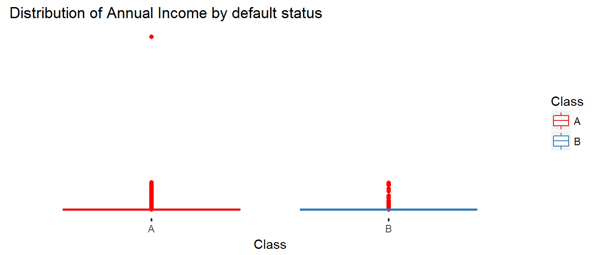
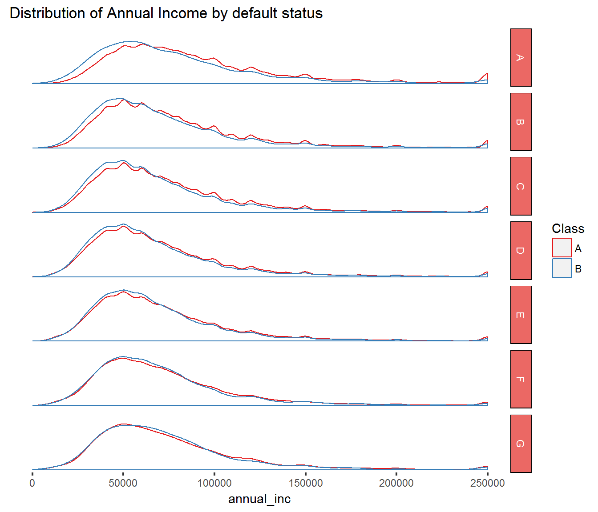

To start off, this analysis makes a few assumptions about how to classify loans.
Current and loans in the grace period are classified as current (A) and all other loans have been classified as defaulted (B). Some of those late loans will be made current it’s not a likely action. Contrarily, some of the loans in the grace period will go into default.
No filters have been applied to the dataset. All loans, including those which not yet matured, are included in the data. While this may be useful for data about originations, it will require consideration when interpreting default rates.

Clearly we get a better picture if we narrow the range of values. I’ll set a maximum income level of 250,000 so that we see less of the outlines and more of the more dense areas. There are only 12K loans with incomes greater than $250K which is approximately 1% of the total number of loans.
